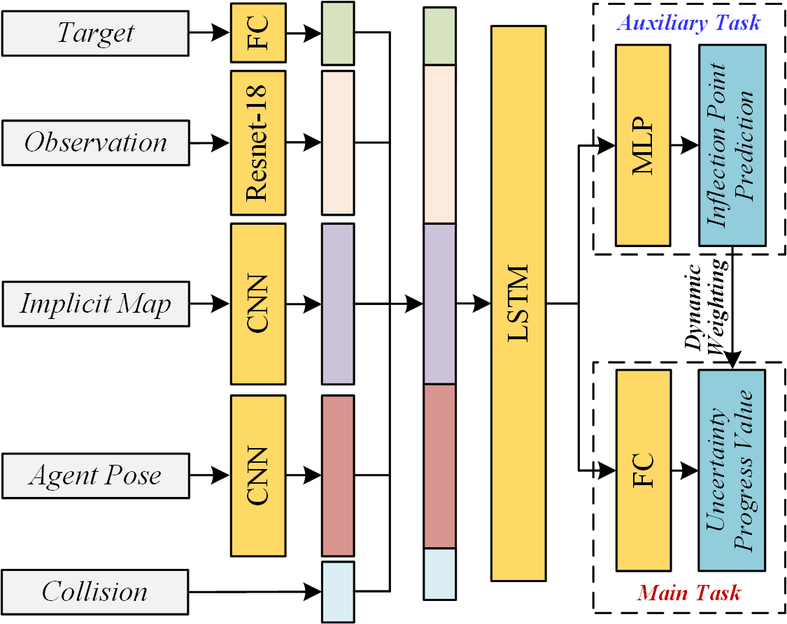
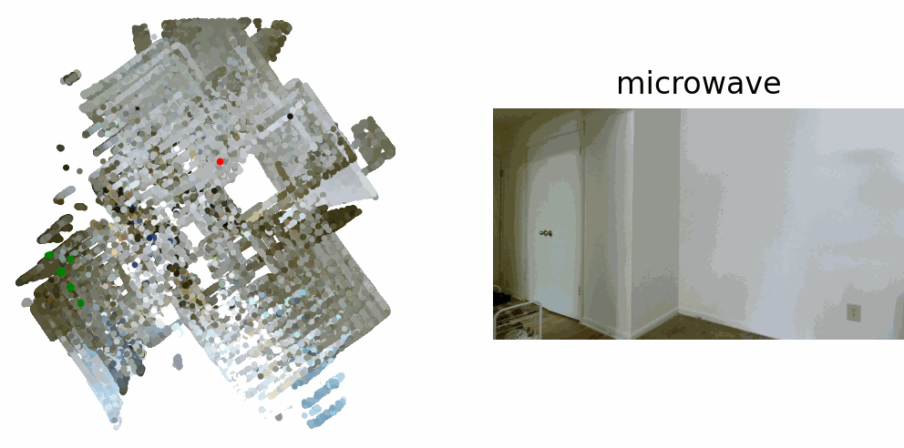

Uncertainty-Aware Active Visual Search via Multimodal Perception and Probabilistic Imitation Learning
Yuhao Wang, Guohui Tian

Yuhao Wang, Guohui Tian







import torch
import torch.nn as nn
import torch.nn.functional as F
from torchvision import models
import os
import numpy as np
import data_helper as dh
import math
class TemporalTransformer(nn.Module):
def __init__(self, d_model, num_heads, num_layers, window_size):
super(TemporalTransformer, self).__init__()
self.d_model = d_model
self.window_size = window_size
encoder_layer = nn.TransformerEncoderLayer(
d_model=d_model,
nhead=num_heads,
dim_feedforward=4 * d_model
)
self.transformer_encoder = nn.TransformerEncoder(
encoder_layer,
num_layers=num_layers
)
def forward(self, x):
batch_size, points, seq_len, d_model = x.shape
x = x.view(batch_size * points, seq_len, d_model)
# 转置序列和批次维度，因为没有batch_first参数
# 从 [batch, seq_len, features] 到 [seq_len, batch, features]
x = x.permute(1, 0, 2)
# 无padding mask
src_mask = None
# 通过Transformer
output = self.transformer_encoder(x, src_mask)
# 转置回原始顺序 [seq_len, batch, features] -> [batch, seq_len, features]
output = output.permute(1, 0, 2)
# 恢复完整形状
output = output.view(batch_size, points, seq_len, d_model)
return output
class MapNet_2(nn.Module):
def __init__(self, par, update_type, input_flags):
super(MapNet_2, self).__init__()
(with_feat, with_sseg, with_dets, use_raw_sseg, use_raw_dets) = input_flags
self.crop_size = par.crop_size
self.global_map_dim = par.global_map_dim
self.observation_dim = par.observation_dim
self.cell_size = par.cell_size
self.map_embedding = par.map_embedding
self.sseg_labels = par.sseg_labels
self.sseg_embedding = par.sseg_embedding # 语义分割的嵌入维度
self.img_embedding = getattr(par, 'img_embedding', 0)
self.dets_embedding = getattr(par, 'dets_embedding', 0)
self.use_raw_sseg = use_raw_sseg
self.use_raw_dets = use_raw_dets
self.dets_nClasses = par.dets_nClasses
self.orientations = par.orientations
self.pad = par.pad
self.loss_type = par.loss_type
self.update_type = par.update_type
self.map_res = 0.05
self.window_size = getattr(par, 'window_size', 4)
self.confidence_channels = 2
if with_feat:
self.resnet_feat_dim = 256
fnet = models.resnet50(pretrained=True)
self.ResNet50Truncated = nn.Sequential(*list(fnet.children())[:-5])
self.small_cnn_img = nn.Sequential(
nn.Conv2d(in_channels=self.resnet_feat_dim, out_channels=64, kernel_size=3, stride=1, padding=1),
nn.ReLU(inplace=True),
nn.Conv2d(in_channels=64, out_channels=par.img_embedding, kernel_size=3, stride=1, padding=1),
nn.ReLU(inplace=True)
)
if with_sseg and not (use_raw_sseg):
self.small_cnn_sseg = nn.Sequential(
nn.Conv2d(in_channels=self.sseg_labels, out_channels=64, kernel_size=3, stride=1, padding=1),
nn.ReLU(inplace=True),
nn.Conv2d(in_channels=64, out_channels=par.sseg_embedding, kernel_size=3, stride=1, padding=1),
nn.ReLU(inplace=True)
)
if with_dets and not (use_raw_dets):
self.small_cnn_det = nn.Sequential(
nn.Conv2d(in_channels=self.dets_nClasses, out_channels=64, kernel_size=3, stride=1, padding=1),
nn.ReLU(inplace=True),
nn.Conv2d(in_channels=64, out_channels=par.dets_embedding, kernel_size=3, stride=1, padding=1),
nn.ReLU(inplace=True)
)
# 多帧融合的Transformer模块
if self.window_size > 1:
self.temporal_transformer = TemporalTransformer(
d_model=self.map_embedding,
num_heads=4,
num_layers=2,
window_size=self.window_size
)
if update_type == "lstm":
# 修改LSTM以接收置信度信息
self.lstm = nn.LSTM(input_size=self.map_embedding,
hidden_size=self.map_embedding, num_layers=1)
elif update_type == "fc":
# 修改FC以接收置信度信息
self.update_fc = nn.Linear((self.map_embedding + self.confidence_channels) * 2,
self.map_embedding + self.confidence_channels)
else:
self.update_avg = nn.AvgPool1d(kernel_size=2)
# 损失函数
if self.loss_type == "BCE":
self.loss_BCE = nn.BCEWithLogitsLoss(reduction="mean")
else:
self.loss_CEL = nn.CrossEntropyLoss(ignore_index=-1)
def bin_pooling(self, img_feat, points2D, map_coords):
"""带不确定性估计的特征池化"""
grid = torch.zeros(img_feat.shape[1], self.observation_dim[0], self.observation_dim[1]).cuda()
grid_count = torch.zeros(1, self.observation_dim[0], self.observation_dim[1]).cuda()
grid_var = torch.zeros(1, self.observation_dim[0], self.observation_dim[1]).cuda()
pix_x, pix_y = points2D[:, 0], points2D[:, 1]
pix_feat = img_feat[0, :, pix_y, pix_x]
uniq_rows = np.unique(map_coords, axis=0)
for i in range(uniq_rows.shape[0]):
ucoord = uniq_rows[i, :]
ind = np.where((map_coords == ucoord).all(axis=1))[0]
bin_feats = pix_feat[:, ind]
bin_feat, _ = torch.max(bin_feats, 1)
grid[:, ucoord[1], ucoord[0]] = bin_feat
# 计算不确定性：观测计数和方差
grid_count[0, ucoord[1], ucoord[0]] = len(ind) # 观测计数
if len(ind) > 1:
# 计算特征向量的方差并取平均
bin_var = torch.var(bin_feats, dim=1).mean()
grid_var[0, ucoord[1], ucoord[0]] = bin_var
return grid, grid_var, grid_count
def label_pooling(self, sseg, points2D, map_coords):
"""带不确定性估计的语义标签池化"""
grid = torch.zeros(self.sseg_labels, self.observation_dim[0], self.observation_dim[1]).cuda()
grid_count = torch.zeros(1, self.observation_dim[0], self.observation_dim[1]).cuda()
grid_var = torch.zeros(1, self.observation_dim[0], self.observation_dim[1]).cuda()
pix_x, pix_y = points2D[:, 0], points2D[:, 1]
pix_lbl = sseg[0, 0, pix_y, pix_x]
uniq_rows = np.unique(map_coords, axis=0)
for i in range(uniq_rows.shape[0]):
ucoord = uniq_rows[i, :]
ind = np.where((map_coords == ucoord).all(axis=1))[0]
bin_lbls = pix_lbl[ind]
# 标签分布
bin_lbls_cpu = bin_lbls.cpu() if bin_lbls.is_cuda else bin_lbls
hist, bins = np.histogram(bin_lbls_cpu.numpy(), bins=list(range(self.sseg_labels + 1)))
hist = hist / float(bin_lbls.shape[0])
grid[:, ucoord[1], ucoord[0]] = torch.tensor(hist, dtype=torch.float32).cuda()
# 不确定性：使用熵作为语义分割的不确定性度量
grid_count[0, ucoord[1], ucoord[0]] = len(ind)
if len(ind) > 1:
# 使用分布的熵作为不确定性度量
hist_tensor = torch.tensor(hist, dtype=torch.float32).cuda()
hist_tensor = hist_tensor + 1e-10 # 防止log(0)
entropy = -torch.sum(hist_tensor * torch.log(hist_tensor))
grid_var[0, ucoord[1], ucoord[0]] = entropy
return grid, grid_var, grid_count
def dets_pooling(self, dets, points2D, map_coords):
"""带不确定性估计的检测池化"""
grid = torch.zeros(self.dets_nClasses, self.observation_dim[0], self.observation_dim[1]).cuda()
grid_count = torch.zeros(1, self.observation_dim[0], self.observation_dim[1]).cuda()
grid_var = torch.zeros(1, self.observation_dim[0], self.observation_dim[1]).cuda()
pix_x, pix_y = points2D[:, 0], points2D[:, 1]
pix_dets = dets[0, :, pix_y, pix_x]
uniq_rows = np.unique(map_coords, axis=0)
for i in range(uniq_rows.shape[0]):
ucoord = uniq_rows[i, :]
ind = np.where((map_coords == ucoord).all(axis=1))[0]
bin_dets = pix_dets[:, ind]
# 取平均值作为检测概率
bin_det = bin_dets.mean(1)
grid[:, ucoord[1], ucoord[0]] = bin_det
# 不确定性：检测分数的方差
grid_count[0, ucoord[1], ucoord[0]] = len(ind)
if len(ind) > 1:
# 计算检测分数的方差并平均
bin_var = torch.var(bin_dets, dim=1).mean()
grid_var[0, ucoord[1], ucoord[0]] = bin_var
return grid, grid_var, grid_count
def groundProjection(self, img_feat_all, points2D_all, local3D_all, sseg_all, dets_all, batch_size, seq_len, input_flags):
"""包含不确定性估计的批量地面投影"""
grid = torch.zeros(batch_size, seq_len, self.map_embedding, self.observation_dim[0], self.observation_dim[1]).cuda()
map_occ = torch.zeros(batch_size, seq_len, 1, self.observation_dim[0], self.observation_dim[1]).cuda()
uncertainty = torch.zeros(batch_size, seq_len, self.confidence_channels, self.observation_dim[0], self.observation_dim[1]).cuda()
for b in range(batch_size):
points2D_seq = points2D_all[b]
local3D_seq = local3D_all[b]
for q in range(seq_len):
points2D_step = points2D_seq[q]
local3D_step = local3D_seq[q]
img_feat_step = img_feat_all[b, q, :, :, :].unsqueeze(0)
sseg_step = sseg_all[b, q, :, :, :].unsqueeze(0)
dets_step = dets_all[b, q, :, :, :].unsqueeze(0)
grid_step, map_occ_step, uncertainty_step = self.groundProjectionStep(
img_feat=img_feat_step,
points2D=points2D_step,
local3D=local3D_step,
sseg=sseg_step,
dets=dets_step,
input_flags=input_flags
)
grid[b, q, :, :, :] = grid_step.squeeze(0)
map_occ[b, q, :, :, :] = map_occ_step.squeeze(0)
uncertainty[b, q, :, :, :] = uncertainty_step.squeeze(0)
return grid, map_occ, uncertainty
def build_loss(self, p_pred, p_gt):
batch_size = p_pred.shape[0]
seq_len = p_pred.shape[1]
# 去除序列中的第一帧，因为它总是恒定的
p_pred = p_pred[:, 1:, :, :, :]
p_gt = p_gt[:, 1:, :, :, :]
if self.loss_type == "BCE":
p_pred = p_pred.contiguous().view(batch_size * (seq_len - 1), self.orientations, self.global_map_dim[0], self.global_map_dim[1])
p_gt = p_gt.contiguous().view(batch_size * (seq_len - 1), self.orientations, self.global_map_dim[0], self.global_map_dim[1])
loss = self.loss_BCE(p_pred, p_gt)
#loss /= p_pred.shape[0] #如果使用mean需要注释，如果reduction使用num取消注释
else:
p_pred = p_pred.contiguous().view(batch_size * (seq_len - 1), self.orientations * self.global_map_dim[0] * self.global_map_dim[1])
p_gt = p_gt.contiguous().view(batch_size * (seq_len - 1), self.orientations * self.global_map_dim[0] * self.global_map_dim[1])
lbls = torch.zeros(p_gt.shape[0]).long().cuda()
for i in range(p_gt.shape[0]):
ind = torch.nonzero(p_gt[i, :])
if (ind.nelement() == 0):
lbls[i] = -1
else:
lbls[i] = ind[0][0]
loss = self.loss_CEL(p_pred, lbls)
return loss
def forward_single_step(self, local_info, t, input_flags, map_previous=None, p_given=None, update_type="lstm"):
"""单步前向推理，包含置信度建模"""
(img_data, points2D, local3D, sseg, dets) = local_info
batch_size = img_data.shape[0]
with_feat = input_flags[0]
if with_feat:
img_feat = self.extract_img_feat(img_data, batch_size)
else:
img_feat = torch.zeros(batch_size, 1, self.crop_size[1], self.crop_size[0]).cuda()
# 地面投影（包含不确定性）
grid = torch.zeros(batch_size, self.map_embedding, self.observation_dim[0], self.observation_dim[1]).cuda()
uncertainty_grid = torch.zeros(batch_size, self.confidence_channels, self.observation_dim[0], self.observation_dim[1]).cuda()
for b in range(batch_size):
points2D_step = points2D[b]
local3D_step = local3D[b]
img_feat_step = img_feat[b, :, :, :].unsqueeze(0)
sseg_step = sseg[b, :, :, :].unsqueeze(0)
dets_step = dets[b, :, :, :].unsqueeze(0)
grid_step, map_occ_step, uncertainty_step = self.groundProjectionStep(
img_feat=img_feat_step,
points2D=points2D_step,
local3D=local3D_step,
sseg=sseg_step,
dets=dets_step,
input_flags=input_flags
)
grid[b, :, :, :] = grid_step
uncertainty_grid[b, :, :, :] = uncertainty_step
# 旋转采样
rotation_stack = self.rotational_sampler(grid=grid)
uncertainty_rotation_stack = self.rotational_sampler(grid=uncertainty_grid)
if t == 0:
# 第一步的情况
p_ = self.init_p(batch_size=batch_size).clone()
map_next = self.register_observation(rotation_stack=rotation_stack, p=p_, batch_size=batch_size)
# 初始化置信度地图
conf_map = self.init_confidence_map(batch_size)
# 注册置信度
reg_conf = self.register_confidence(uncertainty_rotation_stack, p_, batch_size)
# 组合特征和置信度
map_next = torch.cat([map_next, reg_conf], dim=1)
else:
# 使用提供的位姿或预测位姿
if p_given is None:
p_ = self.position_prediction(rotation_stack=rotation_stack, map_previous=map_previous[:, :self.map_embedding], batch_size=batch_size)
else:
p_ = p_given
# 注册观测
reg_obsv = self.register_observation(rotation_stack=rotation_stack, p=p_, batch_size=batch_size)
# 注册置信度
reg_conf = self.register_confidence(uncertainty_rotation_stack, p_, batch_size)
# 组合特征和置信度
reg_obsv_full = torch.cat([reg_obsv, reg_conf], dim=1)
# 更新地图
map_next = self.update_map(reg_obsv_full, map_previous, batch_size=batch_size, update_type=update_type)
return p_, map_next
#这段代码是为置信度的下游利用做好了数据准备，但具体如何利用还需要看register_observation、register_confidence、update_map等方法的实现
def forward(self, local_info, update_type, input_flags, p_gt=None):
"""前向传播，集成多帧融合和置信度建模"""
(img_data, points2D, local3D, sseg, dets) = local_info
batch_size = img_data.shape[0]
seq_len = img_data.shape[1]
# 提取图像特征
with_feat = input_flags[0]
if with_feat:
img_data_flat = img_data.view(batch_size * seq_len, 3, self.crop_size[1], self.crop_size[0])
img_feat = self.extract_img_feat(img_data_flat, batch_size * seq_len)
img_feat = img_feat.view(batch_size, seq_len, self.resnet_feat_dim, self.crop_size[1], self.crop_size[0])
else:
img_feat = torch.zeros(batch_size, seq_len, 1, self.crop_size[1], self.crop_size[0]).cuda()
# 地面投影，包含不确定性
grid, map_occ, uncertainty = self.groundProjection(
img_feat_all=img_feat,
points2D_all=points2D,
local3D_all=local3D,
sseg_all=sseg,
dets_all=dets,
batch_size=batch_size,
seq_len=seq_len,
input_flags=input_flags
)
# 旋转采样
grid_packed = grid.view(batch_size * seq_len, self.map_embedding, self.observation_dim[0], self.observation_dim[1])
uncertainty_packed = uncertainty.view(batch_size * seq_len, self.confidence_channels, self.observation_dim[0], self.observation_dim[1])
# 分别调用rotational_sampler处理特征和不确定性
rotation_stack_packed = self.rotational_sampler(grid=grid_packed)
uncertainty_rotation_stack_packed = self.rotational_sampler(grid=uncertainty_packed)
rotation_stack = rotation_stack_packed.view(batch_size, seq_len, self.map_embedding, self.orientations, self.observation_dim[0], self.observation_dim[1])
uncertainty_rotation_stack = uncertainty_rotation_stack_packed.view(batch_size, seq_len, self.confidence_channels, self.orientations, self.observation_dim[0],
self.observation_dim[1])
# 初始化位姿预测和地图预测
p_pred = torch.zeros(batch_size, seq_len, self.orientations, self.global_map_dim[0], self.global_map_dim[1]).cuda()
map_pred = torch.zeros(batch_size, seq_len, self.map_embedding + self.confidence_channels, self.global_map_dim[0], self.global_map_dim[1]).cuda()
# 初始化多帧融合缓冲区
feature_buffer = None
if self.window_size > 1 and seq_len >= self.window_size:
feature_buffer = torch.zeros(
batch_size,
self.global_map_dim[0] * self.global_map_dim[1],
self.window_size,
self.map_embedding
).cuda()
# 初始化变量
map_next = None
for q in range(seq_len):
rotation_stack_step = rotation_stack[:, q, :, :, :, :]
uncertainty_rotation_stack_step = uncertainty_rotation_stack[:, q, :, :, :, :]
if q == 0:
# 第一帧处理
p_ = self.init_p(batch_size=batch_size).clone()
map_next_feat = self.register_observation(rotation_stack=rotation_stack_step, p=p_, batch_size=batch_size)
map_next_conf = self.register_confidence(uncertainty_rotation_stack=uncertainty_rotation_stack_step, p=p_, batch_size=batch_size)
map_next = torch.cat([map_next_feat, map_next_conf], dim=1)
else:
# 后续帧处理
map_previous = map_next.clone()
# 位姿预测
p_ = self.position_prediction(
rotation_stack=rotation_stack_step,
map_previous=map_previous[:, :self.map_embedding],
batch_size=batch_size
)
# 观测注册
if p_gt is not None:
reg_obsv = self.register_observation(
rotation_stack=rotation_stack_step,
p=p_gt[:, q, :, :, :],
batch_size=batch_size
)
reg_conf = self.register_confidence(
uncertainty_rotation_stack=uncertainty_rotation_stack_step,
p=p_gt[:, q, :, :, :],
batch_size=batch_size
)
else:
reg_obsv = self.register_observation(
rotation_stack=rotation_stack_step,
p=p_,
batch_size=batch_size
)
reg_conf = self.register_confidence(
uncertainty_rotation_stack=uncertainty_rotation_stack_step,
p=p_,
batch_size=batch_size
)
# 地图更新
reg_full = torch.cat([reg_obsv, reg_conf], dim=1)
map_next = self.update_map(reg_full, map_previous, batch_size=batch_size, update_type=update_type)
# 多帧融合处理（统一处理所有帧）
if feature_buffer is not None:
# 提取当前帧的地图特征
map_feats = map_next[:, :self.map_embedding].reshape(
batch_size,
self.map_embedding,
self.global_map_dim[0] * self.global_map_dim[1]
).permute(0, 2, 1)
# 更新特征缓冲区 - 简化逻辑
if q < self.window_size:
# 前window_size帧：按顺序填充
feature_buffer[:, :, q, :] = map_feats
else:
# 超过window_size后：滑动窗口
feature_buffer = feature_buffer.roll(-1, dims=2)
feature_buffer[:, :, -1, :] = map_feats
# 当有足够帧数时应用时序融合
if q >= self.window_size - 1:
# 应用时序transformer
transformed_features = self.temporal_transformer(feature_buffer)
# 获取融合后的最新特征
fused_features = transformed_features[:, :, -1, :].permute(0, 2, 1).reshape(
batch_size,
self.map_embedding,
self.global_map_dim[0],
self.global_map_dim[1]
)
# 用融合后的特征替换地图的特征部分
map_next = torch.cat([fused_features, map_next[:, self.map_embedding:]], dim=1)
# 保存预测结果
p_pred[:, q, :, :, :] = p_
map_pred[:, q, :, :, :] = map_next
return p_pred, map_pred
def extract_img_feat(self, img_data, batch_size):
img_feat = self.ResNet50Truncated(img_data)
img_feat = F.interpolate(img_feat, size=(self.crop_size[1], self.crop_size[0]), mode='nearest')
return img_feat
def init_p(self, batch_size):
p0 = np.zeros((batch_size, self.orientations, self.global_map_dim[0], self.global_map_dim[1]), dtype=np.float32)
p0[:, 0, int(self.global_map_dim[0] / 2.0), int(self.global_map_dim[1] / 2.0)] = 1
return torch.tensor(p0, dtype=torch.float32).cuda()
def init_confidence_map(self, batch_size):
# 初始化两个通道：观测次数和方差
conf_map = np.zeros((batch_size, self.confidence_channels, self.global_map_dim[0], self.global_map_dim[1]), dtype=np.float32)
return torch.tensor(conf_map, dtype=torch.float32).cuda()
# 注册置信度到全局地图
def register_confidence(self, uncertainty_rotation_stack, p, batch_size):
reg_conf = torch.zeros(batch_size, self.confidence_channels, self.global_map_dim[0], self.global_map_dim[1]).cuda()
for i in range(batch_size):
filt = uncertainty_rotation_stack[i, :, :, :, :].permute(1, 0, 2, 3)
p_in = p[i, :, :, :].unsqueeze(0)
reg = F.conv_transpose2d(input=p_in, weight=filt, padding=self.pad)
reg_conf[i, :, :, :] = reg
return reg_conf
def groundProjectionStep(self, img_feat, points2D, local3D, sseg, dets, input_flags):
"""单帧地面投影，包含不确定性估计"""
batch_size = img_feat.shape[0] # 通常为1
grid = torch.zeros(batch_size, self.map_embedding, self.observation_dim[0], self.observation_dim[1]).cuda()
map_occ = torch.zeros(batch_size, 1, self.observation_dim[0], self.observation_dim[1]).cuda()
uncertainty = torch.zeros(batch_size, self.confidence_channels, self.observation_dim[0], self.observation_dim[1]).cuda()
# 解析input_flags
if isinstance(input_flags, (list, tuple)):
with_feat = input_flags[0] if len(input_flags) > 0 else False
with_sseg = input_flags[1] if len(input_flags) > 1 else False
with_dets = input_flags[2] if len(input_flags) > 2 else False
elif hasattr(input_flags, 'feat'):
# 如果是具有特定属性的对象
with_feat = input_flags.feat
with_sseg = input_flags.sseg
with_dets = input_flags.dets
elif isinstance(input_flags, (list, tuple)):
# 取前三个元素，或使用默认值
with_feat = input_flags[0] if len(input_flags) > 0 else False
with_sseg = input_flags[1] if len(input_flags) > 1 else False
with_dets = input_flags[2] if len(input_flags) > 2 else False
else:
# 默认情况
with_feat = True
with_sseg = False
with_dets = False
print("Warning: Unrecognized input_flags format, using defaults")
for b in range(batch_size):
# 超过视野的过滤
ind = np.where((points2D[:, 0] >= 0) & (points2D[:, 0] < self.crop_size[0]) &
(points2D[:, 1] >= 0) & (points2D[:, 1] < self.crop_size[1]))[0]
if ind.size == 0:
# 无有效点，返回零张量
return grid, map_occ, uncertainty
# 过滤后的点
points2D_valid = points2D[ind, :]
local3D_valid = local3D[ind, :]
# 获取地图坐标
map_coords = np.zeros_like(points2D_valid).astype(int)
for i in range(points2D_valid.shape[0]):
# 投影到地图
x_ind = int(self.observation_dim[1] / 2 + local3D_valid[i, 0] / self.map_res)
y_ind = int(self.observation_dim[0] / 2 - local3D_valid[i, 1] / self.map_res)
# 边界检查
if x_ind >= 0 and x_ind < self.observation_dim[1] and y_ind >= 0 and y_ind < self.observation_dim[0]:
map_coords[i, :] = [x_ind, y_ind]
# 池化操作集成不确定性
all_variances = [] # 存储所有池化结果的方差
all_counts = [] # 存储所有池化结果的计数
if with_feat:
grid_feat, grid_var, grid_count = self.bin_pooling(img_feat[b].unsqueeze(0), points2D_valid, map_coords)
# 使用small_cnn_img压缩特征从256维到img_embedding维
grid_feat = self.small_cnn_img(grid_feat.unsqueeze(0)).squeeze(0)
# 使用img_embedding替代resnet_feat_dim
grid[b, :self.img_embedding, :, :] = grid_feat
all_variances.append(grid_var)
all_counts.append(grid_count)
if with_sseg:
start_idx = self.img_embedding if with_feat else 0
grid_sseg, grid_var, grid_count = self.label_pooling(sseg[b].unsqueeze(0), points2D_valid, map_coords)
# 只有在不使用原始语义分割时才压缩
if not self.use_raw_sseg:
grid_sseg = self.small_cnn_sseg(grid_sseg.unsqueeze(0)).squeeze(0)
grid[b, start_idx:start_idx + self.sseg_embedding, :, :] = grid_sseg
all_variances.append(grid_var)
all_counts.append(grid_count)
if with_dets:
# 使用img_embedding替代resnet_feat_dim
start_idx = (self.img_embedding if with_feat else 0) + (self.sseg_embedding if with_sseg else 0)
grid_dets, grid_var, grid_count = self.dets_pooling(dets[b].unsqueeze(0), points2D_valid, map_coords)
# 只有在不使用原始检测时才压缩
if not self.use_raw_dets:
grid_dets = self.small_cnn_det(grid_dets.unsqueeze(0)).squeeze(0)
grid[b, start_idx:start_idx + self.dets_embedding, :, :] = grid_dets
all_variances.append(grid_var)
all_counts.append(grid_count)
# 设置占据网格
map_occ[b, 0, :, :] = (torch.sum(grid[b], dim=0) != 0).float()
# 融合不确定性
if len(all_variances) > 0:
all_var_tensor = torch.cat(all_variances, dim=0)
all_count_tensor = torch.cat(all_counts, dim=0)
avg_var = torch.mean(all_var_tensor, dim=0, keepdim=True) # [1,1,H,W]
total_count = torch.sum(all_count_tensor, dim=0, keepdim=True) # [1,1,H,W]
if total_count.dim() == 3:
uncertainty[b, 0, :, :] = total_count[0, :, :] # 计数
uncertainty[b, 1, :, :] = avg_var[0, :, :] # 方差
elif total_count.dim() == 4:
uncertainty[b, 0, :, :] = total_count[0, 0, :, :]
uncertainty[b, 1, :, :] = avg_var[0, 0, :, :]
else:
print(f"Unexpected total_count shape: {total_count.shape}")
uncertainty[b, 0, :, :] = total_count.reshape(self.observation_dim[0], self.observation_dim[1])
uncertainty[b, 1, :, :] = avg_var.reshape(self.observation_dim[0], self.observation_dim[1])
return grid, map_occ, uncertainty
def rotational_sampler(self, grid, rot_init=True):
if rot_init:
grid = self.do_rotation(grid, angle=-np.pi / 2.0)
rotation_stack = torch.zeros(grid.shape[0], grid.shape[1], self.orientations, self.observation_dim[0], self.observation_dim[1]).cuda()
for i in range(self.orientations):
angle = 2 * np.pi * (i / self.orientations)
rotation_stack[:, :, i, :, :] = self.do_rotation(grid, angle)
return rotation_stack
def do_rotation(self, grid, angle):
theta = torch.tensor([
[np.cos(angle), -np.sin(angle), 0],
[np.sin(angle), np.cos(angle), 0]
], dtype=torch.float32).cuda()
theta = theta.unsqueeze(0).repeat(grid.shape[0], 1, 1)
grid_affine = F.affine_grid(theta, grid.size(), align_corners=True)
return F.grid_sample(grid, grid_affine, align_corners=True)
def position_prediction(self, rotation_stack, map_previous, batch_size):
corr_map = torch.zeros(batch_size, self.orientations, self.global_map_dim[0], self.global_map_dim[1]).cuda()
for b in range(batch_size):
map_ = map_previous[b, :, :, :].unsqueeze(0)
for r in range(self.orientations):
filt = rotation_stack[b, :, r, :, :].unsqueeze(0)
corr_tmp = F.conv2d(input=map_, weight=filt, padding=self.pad)
corr_map[b, r, :, :] = corr_tmp
p_ = torch.zeros(batch_size, self.orientations, self.global_map_dim[0], self.global_map_dim[1]).cuda()
for i in range(batch_size):
p_tmp = corr_map[i, :, :, :].view(-1)
p_tmp = p_tmp.view(self.orientations, self.global_map_dim[0], self.global_map_dim[1])
p_[i, :, :, :] = p_tmp
return p_
def register_observation(self, rotation_stack, p, batch_size):
reg_obsv = torch.zeros(batch_size, self.map_embedding, self.global_map_dim[0], self.global_map_dim[1]).cuda()
for i in range(batch_size):
filt = rotation_stack[i, :, :, :, :].permute(1, 0, 2, 3)
p_in = p[i, :, :, :].unsqueeze(0)
reg = F.conv_transpose2d(input=p_in, weight=filt, padding=self.pad)
reg_obsv[i, :, :, :] = reg
return reg_obsv
def update_map(self, reg_obsv, map_previous, batch_size, update_type):
#置信度（方差/观测次数）只在LSTM之后用于贝叶斯加权融合，不参与LSTM的输入和学习
if update_type == "lstm":
map_next = torch.zeros_like(map_previous)
feat_dim = self.map_embedding
eps = 1e-6
for i in range(self.global_map_dim[0]):
for j in range(self.global_map_dim[1]):
# LSTM更新特征部分
emb_in = reg_obsv[:, :feat_dim, i, j]
emb_hidden = map_previous[:, :feat_dim, i, j]
emb_in = emb_in.unsqueeze(0)
emb_hidden = emb_hidden.unsqueeze(0)
hidden = (emb_hidden.contiguous(), emb_hidden.contiguous())
lstm_out, hidden_out = self.lstm(emb_in, hidden)
lstm_out = lstm_out.squeeze(0)
# 方差加权融合（贝叶斯加权）
lstm_feat = lstm_out # [B, feat_dim]
feat2 = map_previous[:, :feat_dim, i, j]
# 只取一维方差
var1 = reg_obsv[:, feat_dim + 1:feat_dim + 2, i, j]
var2 = map_previous[:, feat_dim + 1:feat_dim + 2, i, j]
var1 = var1.expand(-1, feat_dim)
var2 = var2.expand(-1, feat_dim)
var1 = var1.clamp(min=eps)
var2 = var2.clamp(min=eps)
weight1 = 1.0 / var1
weight2 = 1.0 / var2
new_feat = (weight1 * lstm_feat + weight2 * feat2) / (weight1 + weight2)
# 方差融合（贝叶斯后验）
new_var = 1.0 / (weight1 + weight2) # [B, feat_dim]
count1 = reg_obsv[:, feat_dim:feat_dim + 1, i, j]
count2 = map_previous[:, feat_dim:feat_dim + 1, i, j]
new_count = count1 + count2
map_next[:, :feat_dim, i, j] = new_feat
map_next[:, feat_dim:feat_dim + 1, i, j] = new_count
map_next[:, feat_dim + 1:feat_dim + 2, i, j] = new_var[:, :1]
map_next[:, :feat_dim] = torch.tanh(map_next[:, :feat_dim])
elif update_type == "fc":
map2 = torch.cat((map_previous, reg_obsv), 1)
map_next = self.update_fc(map2.permute(0, 2, 3, 1))
map_next = torch.tanh(map_next)
map_next = map_next.permute(0, 3, 1, 2)
else: # case 'avg'
map_next = torch.zeros_like(map_previous)
# 分离特征和置信度
feat_dim = self.map_embedding
# 处理特征部分
for i in range(self.global_map_dim[0]):
for j in range(self.global_map_dim[1]):
# 特征向量
vec1_feat = reg_obsv[:, :feat_dim, i, j].unsqueeze(2)
vec2_feat = map_previous[:, :feat_dim, i, j].unsqueeze(2)
vec_feat = torch.cat((vec1_feat, vec2_feat), 2)
avg_feat = self.update_avg(vec_feat).squeeze(2)
# 置信度 - 对观测次数累加，对方差加权平均
count1 = reg_obsv[:, feat_dim:feat_dim + 1, i, j]
count2 = map_previous[:, feat_dim:feat_dim + 1, i, j]
var1 = reg_obsv[:, feat_dim + 1:, i, j]
var2 = map_previous[:, feat_dim + 1:, i, j]
# 累加观测次数
new_count = count1 + count2
# 加权平均方差
total_count = torch.clamp(new_count, min=1.0)
new_var = (count1 * var1 + count2 * var2) / total_count
# 更新地图
map_next[:, :feat_dim, i, j] = avg_feat
map_next[:, feat_dim:feat_dim + 1, i, j] = new_count
map_next[:, feat_dim + 1:, i, j] = new_var
# 应用tanh仅到特征部分，而不是置信度
map_next[:, :feat_dim] = torch.tanh(map_next[:, :feat_dim])
return map_next
CODE FOR train_FUVP
CODE FOR CUIL
CODE FOR train_CUIL